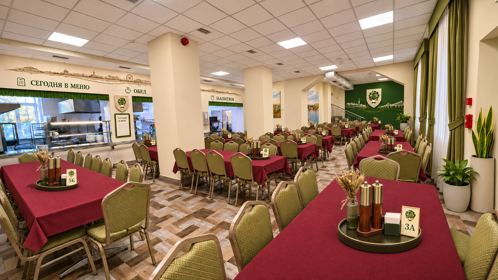
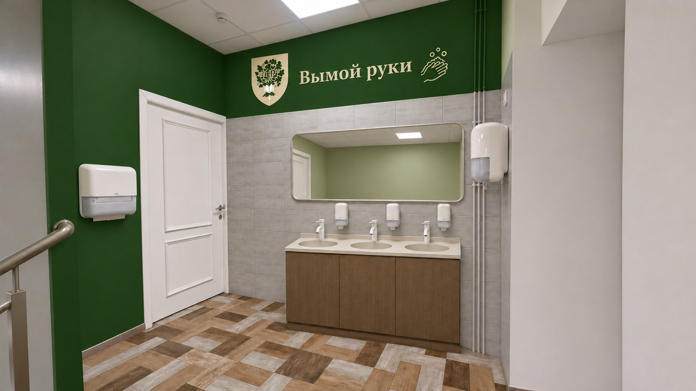
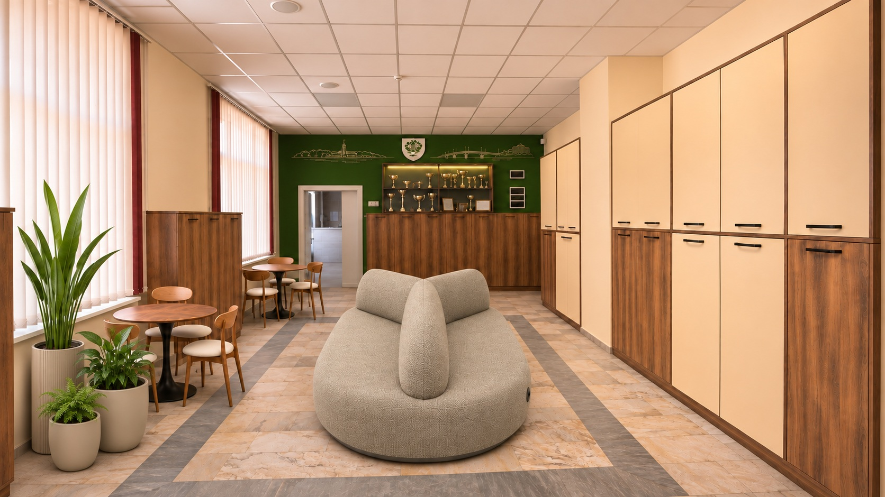

Пространства гимназии
Выберите нужное место или деталь проекта.

СтоловаяДва оформления раздачи и четыре палитры Вытяжка и коробСветлая отделка и детали решёток
Вытяжка и коробСветлая отделка и детали решёток
 Холл и входДва ракурса La Isla, часы и двери
Холл и входДва ракурса La Isla, часы и двери

РукомойникиТри чаши, зеркало и отделка труб
Растения и кашпоГруппы для столовой и холла Расчёт закупокТри сценария с ценами и количеством
Расчёт закупокТри сценария с ценами и количеством